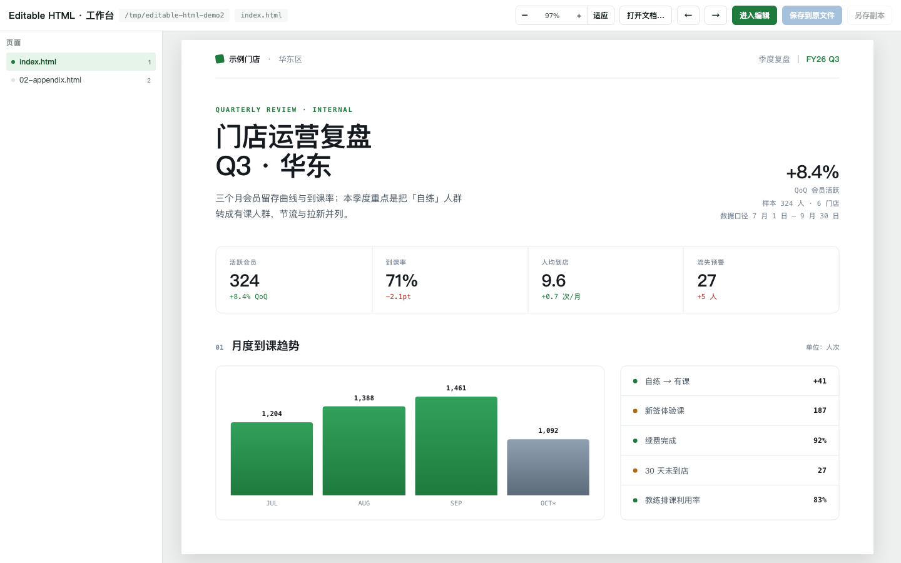
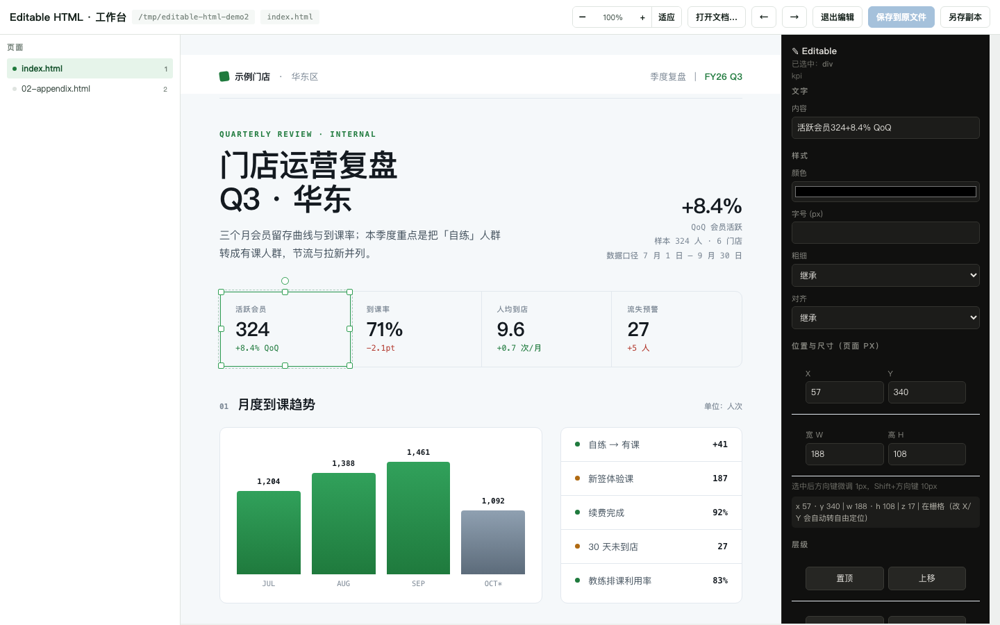

Runtime
Node.js 18+只用内置 http / fs / path
指到一个文件夹，浏览器里拖放、改字、改色、调层级，保存写回原文件。
不产生 (1).html，不改样式表，写完仍是干净、可 git diff 的源码。

按住元素拖，靠近其它块自动吸附；控制点缩放，双击直接改字。位移按画布缩放比换算——屏幕 100px 就是该走的 100px，面板里还有 X / Y / 宽 / 高 数值框。
进编辑那一刻把整页按当前位置冻成绝对坐标，之后没有元素参与文档流：元素可以重叠，原位置不留空洞。层序置顶 / 置底 / 上移 / 下移都活过保存。
保存 = 就地写回同一个路径。没真改动就不写盘，连点两次字节不变；写回来的是干净页面，注入的编辑器脚本已被剥掉，/__revert 可整页回退。
编辑器只写内容层与 class 属性
→ 永远不破坏设计层 / 布局层
/* tokens.css —— 唯一真源 */ :root { --accent: #1f7a3d; --fs-3: 20px; --r-md: 10px; } /* 页面 —— 只有语义 class，没有魔法数字 */ <section class="grid"> <div class="blk span-4">卡片一</div> <div class="blk span-6 start-5">卡片二</div> </section>

v5.10 起进编辑不再重排：←↑→↓ 每次 1px、Shift 10px，700ms 内的连续微调合成一个撤销步。
v5.11 起 z-index 会跟着保存一起活下来：置顶 / 置底 / 上移 / 下移，拖出来的元素压在正文上也仍然是那张源码。
想留原稿就点另存：/__saveas 弹系统对话框，主文件与「已改动」基准不动。
# 起服务：零依赖，端口占用自动顺延 node scripts/editable-studio.mjs --root "/path/to/project" --port 8899 # 或双击选文件夹 open-project.command # macOS open-project.cmd # Windows
--root 指任意文件夹或单份 HTML；也可在编辑器里点「打开文档」临时切工作根。
页面地址后加 ?edit=1。编辑器脚本由服务端注入，项目本身不需要引任何东西。
点「保存到原文件」或 Ctrl+S。原文件就地更新，注入痕迹全部剥干净。
MIT License · 无第三方运行时依赖 · 服务只监听 127.0.0.1
github.com/Krislu1221/editable-html-workbench